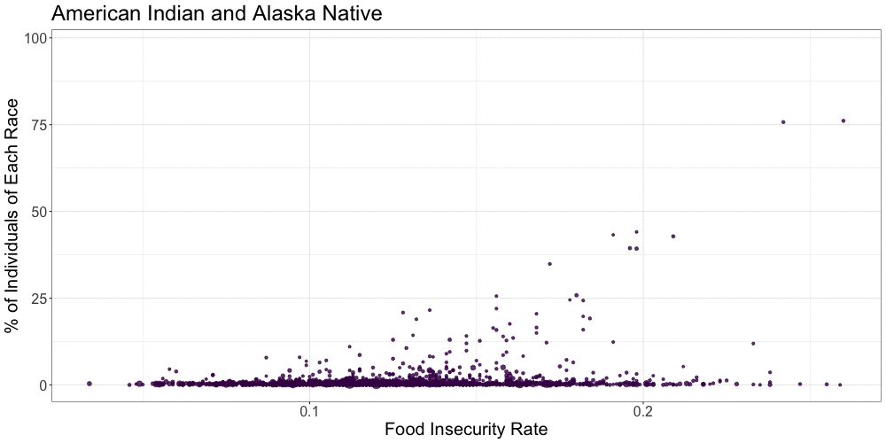
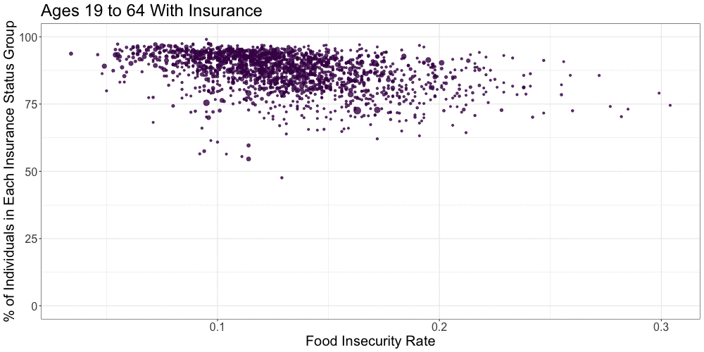

See the Gap
Vasili Fokaidis
library(tidyverse)## ── Attaching packages ─────────────────────────────────────────────────── tidyverse 1.3.0 ──## ✓ ggplot2 3.3.2 ✓ purrr 0.3.4
## ✓ tibble 3.0.3 ✓ dplyr 1.0.2
## ✓ tidyr 1.1.2 ✓ stringr 1.4.0
## ✓ readr 1.3.1 ✓ forcats 0.5.0## ── Conflicts ────────────────────────────────────────────────────── tidyverse_conflicts() ──
## x dplyr::filter() masks stats::filter()
## x dplyr::lag() masks stats::lag()library(gganimate)
library(flexdashboard)
knitr::opts_chunk$set(
echo = TRUE,
warning = FALSE,
fig.width = 8,
fig.height = 6,
out.width = "90%"
)
theme_set(theme_minimal() + theme(legend.position = "bottom"))
options(
ggplot2.continuous.colour = "viridis",
ggplot2.continuous.fill = "viridis"
)
scale_colour_discrete = scale_colour_viridis_d
scale_fill_discrete = scale_fill_viridis_dRead in acs race data and acs hispanic data. And manipulate respective data to make scatter plots.
race_df =
read_csv("ACS_data/ACS_2017_race.csv") %>%
rename(
total = "K200201_001E",
white = "K200201_002E",
black = "K200201_003E",
am_ind_al_nat = "K200201_004E",
asian = "K200201_005E",
nat_ha_pac_isl = "K200201_006E",
other = "K200201_007E",
two_or_more = "K200201_008E",
county_state = "NAME"
) %>%
janitor::clean_names() %>%
select(geo_id, county_state, total, white, black, am_ind_al_nat, asian, nat_ha_pac_isl, other, two_or_more) %>%
slice(-1) %>%
=======
Read in data. And manipulate respective data to make scatter plots.
Percent function, and percents of each race by county.
Read in 2017 mtm data, and merge with acs race data (race_plot).
---
title: "dashboard_1"
author: "Vasili Fokaidis"
output:
flexdashboard::flex_dashboard:
orientation: columns
vertical_layout: fill
source: embed
---
```{r}
library(tidyverse)
```
Read in data. And manipulate respective data to make scatter plots.
```{r}
race_plot =
read_csv("ACS_data/ACS_2017_race.csv") %>%
rename(
total = "K200201_001E",
white = "K200201_002E",
black = "K200201_003E",
am_ind_al_nat = "K200201_004E",
asian = "K200201_005E",
nat_ha_pac_isl = "K200201_006E",
other = "K200201_007E",
two_or_more = "K200201_008E",
county_state = "NAME"
) %>%
janitor::clean_names() %>%
select(geo_id, county_state, total, white, black, am_ind_al_nat, asian, nat_ha_pac_isl, other, two_or_more) %>%
slice(-1) %>%
>>>>>>> b5a241ee096d415f2d0b31bec1ffafa27759e5ac
mutate(
total = as.numeric(total),
white = as.numeric(white),
black = as.numeric(black),
am_ind_al_nat = as.numeric(am_ind_al_nat),
asian = as.numeric(asian),
nat_ha_pac_isl = as.numeric(nat_ha_pac_isl),
other = as.numeric(other),
<<<<<<< HEAD
two_or_more = as.numeric(two_or_more)
)
## Parsed with column specification:
## cols(
## GEO_ID = col_character(),
## NAME = col_character(),
## K200201_001E = col_character(),
## K200201_001M = col_character(),
## K200201_002E = col_character(),
## K200201_002M = col_character(),
## K200201_003E = col_character(),
## K200201_003M = col_character(),
## K200201_004E = col_character(),
## K200201_004M = col_character(),
## K200201_005E = col_character(),
## K200201_005M = col_character(),
## K200201_006E = col_character(),
## K200201_006M = col_character(),
## K200201_007E = col_character(),
## K200201_007M = col_character(),
## K200201_008E = col_character(),
## K200201_008M = col_character()
## )
hispanic_df =
read_csv("ACS_data/ACS_2017_hispanic.csv") %>%
rename(
total = "K200301_001E",
hispanic = "K200301_003E",
county_state = "NAME"
) %>%
janitor::clean_names() %>%
select(geo_id, county_state, total, hispanic) %>%
slice(-1) %>%
mutate(
total = as.numeric(total),
hispanic = as.numeric(hispanic)
)
## Parsed with column specification:
## cols(
## GEO_ID = col_character(),
## NAME = col_character(),
## K200301_001E = col_character(),
## K200301_001M = col_character(),
## K200301_002E = col_character(),
## K200301_002M = col_character(),
## K200301_003E = col_character(),
## K200301_003M = col_character()
## )
Percent function, and percents of each race by county.
per_f = function(x) {
x/race_df$total * 100
}
per_f_h = function(y) {
y/hispanic_df$total * 100
}
race_df =
race_df %>%
=======
two_or_more = as.numeric(two_or_more),
county_state = tolower(county_state),
county_state = str_replace(county_state, " county, ", "_"),
county_state = str_replace(county_state, "alabama", "AL"),
county_state = str_replace(county_state, "alaska", "AK"),
county_state = str_replace(county_state, "arkansas", "AR"),
county_state = str_replace(county_state, "arizona", "AZ"),
county_state = str_replace(county_state, "california", "CA"),
county_state = str_replace(county_state, "colorado", "CO"),
county_state = str_replace(county_state, "connecticut", "CT"),
county_state = str_replace(county_state, "delaware", "DE"),
county_state = str_replace(county_state, "district of columbia", "DC"),
county_state = str_replace(county_state, "florida", "FL"),
county_state = str_replace(county_state, "georgia", "GA"),
county_state = str_replace(county_state, "hawaii", "HI"),
county_state = str_replace(county_state, "idaho", "ID"),
county_state = str_replace(county_state, "illinois", "IL"),
county_state = str_replace(county_state, "indiana", "IN"),
county_state = str_replace(county_state, "iowa", "IA"),
county_state = str_replace(county_state, "kansas", "KS"),
county_state = str_replace(county_state, "kentucky", "KY"),
county_state = str_replace(county_state, "lousiana", "LA"),
county_state = str_replace(county_state, "maine", "ME"),
county_state = str_replace(county_state, "maryland", "MD"),
county_state = str_replace(county_state, "massachusetts", "MA"),
county_state = str_replace(county_state, "michigan", "MI"),
county_state = str_replace(county_state, "minnesota", "MN"),
county_state = str_replace(county_state, "mississippi", "MS"),
county_state = str_replace(county_state, "missouri", "MO"),
county_state = str_replace(county_state, "montana", "MT"),
county_state = str_replace(county_state, "nebraska", "NE"),
county_state = str_replace(county_state, "nevada", "NV"),
county_state = str_replace(county_state, "new hampshire", "NH"),
county_state = str_replace(county_state, "new jersey", "NJ"),
county_state = str_replace(county_state, "new mexico", "NM"),
county_state = str_replace(county_state, "new york", "NY"),
county_state = str_replace(county_state, "north carolina", "NC"),
county_state = str_replace(county_state, "north dakota", "ND"),
county_state = str_replace(county_state, "ohia", "OH"),
county_state = str_replace(county_state, "oklahoma", "OK"),
county_state = str_replace(county_state, "oregon", "OR"),
county_state = str_replace(county_state, "pennsylvania", "PA"),
county_state = str_replace(county_state, "rhode island", "RI"),
county_state = str_replace(county_state, "south carolina", "SC"),
county_state = str_replace(county_state, "south dakota", "SD"),
county_state = str_replace(county_state, "tennessee", "TN"),
county_state = str_replace(county_state, "texas", "TX"),
county_state = str_replace(county_state, "utah", "UT"),
county_state = str_replace(county_state, "vermont", "VT"),
county_state = str_replace(county_state, "virginia", "VA"),
county_state = str_replace(county_state, "washington", "WA"),
county_state = str_replace(county_state, "west virginia", "WV"),
county_state = str_replace(county_state, "wisconsin", "WI"),
county_state = str_replace(county_state, "wyoming", "WY"),
county_state = str_replace(county_state, "puerto rico", "PR")
)
```
Percent function, and percents of each race by county.
```{r}
per_f = function(x) {
x/race_plot$total * 100
}
race_plot =
race_plot %>%
>>>>>>> b5a241ee096d415f2d0b31bec1ffafa27759e5ac
mutate(
white = per_f(white),
black = per_f(black),
am_ind_al_nat = per_f(am_ind_al_nat),
asian = per_f(asian),
nat_ha_pac_isl = per_f(nat_ha_pac_isl),
other = per_f(other),
two_or_more = per_f(two_or_more)
)
<<<<<<< HEAD
hispanic_df =
hispanic_df %>%
mutate(
hispanic = per_f_h(hispanic)
) %>%
select(geo_id, hispanic)
race_hisp_df =
inner_join(x = race_df, y = hispanic_df, by = "geo_id", all = TRUE)
Read in 2017 mtm data, and merge with acs race data.
mtm_2017 =
read_csv("mtm_acs_2017_df.csv") %>%
rename(
geo_id = id
)
## Parsed with column specification:
## cols(
## .default = col_double(),
## state = col_character(),
## county = col_character(),
## county_state = col_character(),
## low_threshold_type = col_character(),
## high_threshold_type = col_character(),
## zip = col_character(),
## id = col_character(),
## estimate_total_hispanic_data = col_character(),
## estimate_total_not_hispanic_or_latino = col_character(),
## estimate_total_hispanic_or_latino = col_character(),
## estimate_total_immigration_data = col_character(),
## estimate_total_u_s_citizen = col_character(),
## estimate_total_not_a_u_s_citizen = col_character(),
## estimate_total_race_data = col_character(),
## estimate_total_white_alone = col_character(),
## estimate_total_black_or_african_american_alone = col_character(),
## estimate_total_american_indian_and_alaska_native_alone = col_character(),
## estimate_total_asian_alone = col_character(),
## estimate_total_native_hawaiian_and_other_pacific_islander_alone = col_character(),
## estimate_total_some_other_race_alone = col_character()
## # ... with 1 more columns
## )
## See spec(...) for full column specifications.
mtm_2017_acs_2017_race_df =
inner_join(x = race_hisp_df, y = mtm_2017, by = "geo_id", all = TRUE)
write_csv(x = mtm_2017_acs_2017_race_df, "mtm_2017_acs_2017_race_df.csv")
Making transitioning graph for food insecurity by percent of race in each county across the U.S.
Row
Chart A
race_per_plot =
mtm_2017_acs_2017_race_df %>%
pivot_longer(
white:hispanic,
names_to = "race",
values_to = "percents"
) %>%
mutate(
race = str_replace(race, "white", "White"),
race = str_replace(race, "black", "Black"),
race = str_replace(race, "am_ind_al_nat", "American Indian and Alaska Native"),
race = str_replace(race, "asian", "Asian"),
race = str_replace(race, "nat_ha_pac_isl", "Native Hawaiian and Other Pacific Islander"),
race = str_replace(race, "other", "Other Race"),
race = str_replace(race, "two_or_more", "Two or More Races"),
race = str_replace(race, "hispanic", "Hispanic")
) %>%
select(geo_id, total, race, percents, fi_rate) %>%
drop_na() %>%
ggplot(aes(x = fi_rate, y = percents, size = total, color = race)) +
geom_point(show.legend = FALSE, alpha = 0.8) +
labs(
title = '{closest_state}',
x = "Food Insecurity Rate",
y = "% Race Within Each County"
) +
theme_bw() +
transition_states(race, transition_length = 1, state_length = 3, wrap = TRUE) +
enter_fade() +
exit_fade() +
ease_aes('cubic-in-out')
animate(race_per_plot, fps = 5, height = 500, width = 1000)

Read in education attainment acs data.
edu_att =
read_csv("ACS_data/ACS_2017_edu.csv") %>%
rename(
total = "K201501_001E",
less_9th = "K201501_002E",
nineth_to_12th = "K201501_003E",
hs_grad = "K201501_004E",
some_coll = "K201501_005E",
assoc_deg = "K201501_006E",
bach_deg = "K201501_007E",
grad_or_prof = "K201501_008E",
county_state = "NAME"
) %>%
janitor::clean_names() %>%
select(geo_id, total, less_9th, nineth_to_12th, hs_grad, some_coll, assoc_deg, bach_deg, grad_or_prof) %>%
slice(-1) %>%
mutate(
total = as.numeric(total),
less_9th = as.numeric(less_9th),
nineth_to_12th = as.numeric(nineth_to_12th),
hs_grad = as.numeric(hs_grad),
some_coll = as.numeric(some_coll),
assoc_deg = as.numeric(assoc_deg),
bach_deg = as.numeric(bach_deg),
grad_or_prof = as.numeric(grad_or_prof))
## Parsed with column specification:
## cols(
## GEO_ID = col_character(),
## NAME = col_character(),
## K201501_001E = col_character(),
## K201501_001M = col_character(),
## K201501_002E = col_character(),
## K201501_002M = col_character(),
## K201501_003E = col_character(),
## K201501_003M = col_character(),
## K201501_004E = col_character(),
## K201501_004M = col_character(),
## K201501_005E = col_character(),
## K201501_005M = col_character(),
## K201501_006E = col_character(),
## K201501_006M = col_character(),
## K201501_007E = col_character(),
## K201501_007M = col_character(),
## K201501_008E = col_character(),
## K201501_008M = col_character()
## )
Percent function, and percents for education attainment % by county.
per_f_edu = function(x) {
x/edu_att$total * 100
}
edu_att =
edu_att %>%
mutate(
less_9th = per_f_edu(less_9th),
nineth_to_12th = per_f_edu(nineth_to_12th),
hs_grad = per_f_edu(hs_grad),
some_coll = per_f_edu(some_coll),
assoc_deg = per_f_edu(assoc_deg),
bach_deg = per_f_edu(bach_deg),
grad_or_prof = per_f_edu(grad_or_prof)
)
Merge with acs education data.
mtm_2017_edu_2017_att_df =
inner_join(x = edu_att, y = mtm_2017, by = "geo_id", all = TRUE)
write_csv(x = mtm_2017_edu_2017_att_df, "mtm_2017_edu_2017_att_df.csv")
Making transitioning graph for food insecurity by percent of education attainment category in each county across the U.S.
Chart B
edu_per_plot =
mtm_2017_edu_2017_att_df %>%
pivot_longer(
less_9th:grad_or_prof,
names_to = "edu_att",
values_to = "percents"
) %>%
mutate(
edu_att = str_replace(edu_att, "less_9th", "Less Than 9th Grade"),
edu_att = str_replace(edu_att, "nineth_to_12th", "9th to 12th Grade"),
edu_att = str_replace(edu_att, "hs_grad", "High School Graduate"),
edu_att = str_replace(edu_att, "some_coll", "Some College"),
edu_att = str_replace(edu_att, "assoc_deg", "Associate's Degree"),
edu_att = str_replace(edu_att, "bach_deg", "Bachelor's Degree"),
edu_att = str_replace(edu_att, "grad_or_prof", "Graduate or Professional Degree")
) %>%
select(geo_id, total, edu_att, percents, fi_rate) %>%
drop_na() %>%
ggplot(aes(x = fi_rate, y = percents, size = total, color = edu_att)) +
geom_point(show.legend = FALSE, alpha = 0.8) +
labs(
title = '{closest_state}',
x = "Food Insecurity Rate",
y = "% Education Attainment Within Each County"
) +
theme_bw() +
transition_states(edu_att, transition_length = 1, state_length = 3, wrap = TRUE) +
enter_fade() +
exit_fade() +
ease_aes('cubic-in-out')
animate(edu_per_plot, fps = 5, height = 500, width = 1000)

Read in insurance acs data.
ins_status =
read_csv("ACS_data/ACS_2017_ins_status.csv") %>%
rename(
total = "K202701_001E",
tot_under_19 = "K202701_002E",
y_under_19 = "K202701_003E",
n_under_19 = "K202701_004E",
tot_19_64 = "K202701_005E",
y_19_64 = "K202701_006E",
n_19_64 = "K202701_007E",
tot_65_over = "K202701_008E",
y_65_over = "K202701_009E",
n_65_over = "K202701_010E"
) %>%
janitor::clean_names() %>%
select(geo_id, total, tot_under_19, y_under_19, n_under_19, tot_19_64, y_19_64, n_19_64, tot_65_over, y_65_over, n_65_over) %>%
slice(-1) %>%
mutate(
total = as.numeric(total),
tot_under_19 = as.numeric(tot_under_19),
y_under_19 = as.numeric(y_under_19),
n_under_19 = as.numeric(n_under_19),
tot_19_64 = as.numeric(tot_19_64),
y_19_64 = as.numeric(y_19_64),
n_19_64 = as.numeric(n_19_64),
tot_65_over = as.numeric(tot_65_over),
y_65_over = as.numeric(y_65_over),
n_65_over = as.numeric(n_65_over)
)
## Parsed with column specification:
## cols(
## .default = col_character()
## )
## See spec(...) for full column specifications.
Percent function, and percents for insurance status % by county.
per_f_ins = function(x, y) {
x/y * 100
}
ins_status =
ins_status %>%
mutate(
y_under_19 = per_f_ins(y_under_19, tot_under_19),
n_under_19 = per_f_ins(n_under_19, tot_under_19),
y_19_64 = per_f_ins(y_19_64, tot_19_64),
n_19_64 = per_f_ins(n_19_64, tot_19_64),
y_65_over = per_f_ins(y_65_over, tot_65_over),
n_65_over = per_f_ins(n_65_over, tot_65_over)
)
Merge with acs insurance data.
mtm_2017_ins_2017_status_df =
inner_join(x = ins_status, y = mtm_2017, by = "geo_id", all = TRUE)
write_csv(x = mtm_2017_ins_2017_status_df, "mtm_2017_ins_2017_status_df.csv")
Making transitioning graph for food insecurity by percent of insurance status category in each county across the U.S.
Row
Chart C
ins_status_plot =
mtm_2017_ins_2017_status_df %>%
select(-tot_19_64, -tot_under_19, - tot_65_over) %>%
pivot_longer(
y_under_19:n_65_over,
names_to = "ins_status",
values_to = "percents"
) %>%
mutate(
ins_status = str_replace(ins_status, "y_under_19", "Under Age 19 With Insurance"),
ins_status = str_replace(ins_status, "n_under_19", "Under Age 19 Without Insurance"),
ins_status = str_replace(ins_status, "y_19_64", "Ages 19 to 64 With Insurance"),
ins_status = str_replace(ins_status, "n_19_64", "Ages 19 to 64 Without Insurance"),
ins_status = str_replace(ins_status, "y_65_over", "Over Age 65 With Insurance"),
ins_status = str_replace(ins_status, "n_65_over", "Over Age 65 Without Insurance"),
) %>%
select(geo_id, total, ins_status, percents, fi_rate) %>%
drop_na() %>%
ggplot(aes(x = fi_rate, y = percents, size = total, color = ins_status)) +
geom_point(show.legend = FALSE, alpha = 0.8) +
labs(
title = '{closest_state}',
x = "Food Insecurity Rate",
y = "% of Individuals"
) +
theme_bw() +
transition_states(ins_status, transition_length = 1, state_length = 3, wrap = TRUE) +
enter_fade() +
exit_fade() +
ease_aes('cubic-in-out')
animate(ins_status_plot, fps = 5, height = 500, width = 1000)

Read in income acs data.
income_brac =
read_csv("ACS_data/ACS_2017_income.csv") %>%
rename(
total = "K201901_001E",
less_20 = "K201901_002E",
twenty_39 = "K201901_003E",
forty_59 = "K201901_004E",
sixty_99 = "K201901_005E",
hun_149 = "K201901_006E",
hunfifty_199 = "K201901_007E",
twohun_more = "K201901_008E"
) %>%
janitor::clean_names() %>%
select(geo_id, total, less_20, twenty_39, forty_59, sixty_99, hun_149, hunfifty_199, twohun_more) %>%
slice(-1) %>%
mutate(
total = as.numeric(total),
less_20 = as.numeric(less_20),
twenty_39 = as.numeric(twenty_39),
forty_59 = as.numeric(forty_59),
sixty_99 = as.numeric(sixty_99),
hun_149 = as.numeric(hun_149),
hunfifty_199 = as.numeric(hunfifty_199),
twohun_more = as.numeric(twohun_more)
)
## Parsed with column specification:
## cols(
## GEO_ID = col_character(),
## NAME = col_character(),
## K201901_001E = col_character(),
## K201901_001M = col_character(),
## K201901_002E = col_character(),
## K201901_002M = col_character(),
## K201901_003E = col_character(),
## K201901_003M = col_character(),
## K201901_004E = col_character(),
## K201901_004M = col_character(),
## K201901_005E = col_character(),
## K201901_005M = col_character(),
## K201901_006E = col_character(),
## K201901_006M = col_character(),
## K201901_007E = col_character(),
## K201901_007M = col_character(),
## K201901_008E = col_character(),
## K201901_008M = col_character()
## )
Percent function, and percents for income bracket % by county.
per_f_inco = function(x) {
x/income_brac$total * 100
}
income_brac =
income_brac %>%
mutate(
less_20 = per_f_inco(less_20),
twenty_39 = per_f_inco(twenty_39),
forty_59 = per_f_inco(forty_59),
sixty_99 = per_f_inco(sixty_99),
hun_149 = per_f_inco(hun_149),
hunfifty_199 = per_f_inco(hunfifty_199),
twohun_more = per_f_inco(twohun_more)
)
Merge with acs income data.
mtm_2017_income_2017_brac_df =
inner_join(x = income_brac, y = mtm_2017, by = "geo_id", all = TRUE)
write_csv(x = mtm_2017_income_2017_brac_df, "mtm_2017_income_2017_brac_df.csv")
Making transitioning graph for food insecurity by percent of income bracket in each county across the U.S.
Chart D
income_brac_plot =
mtm_2017_income_2017_brac_df %>%
pivot_longer(
less_20:twohun_more,
names_to = "income_brac",
values_to = "percents"
) %>%
mutate(
income_brac = str_replace(income_brac, "less_20", "Less Than $20,000"),
income_brac = str_replace(income_brac, "twenty_39", "Between $20,000 and $39,999"),
income_brac = str_replace(income_brac, "forty_59", "Between $40,000 and $59,999"),
income_brac = str_replace(income_brac, "sixty_99", "Between $60,000 and $99,999"),
income_brac = str_replace(income_brac, "hun_149", "Between $100,000 and $149,999"),
income_brac = str_replace(income_brac, "hunfifty_199", "Between $150,000 and $199,999"),
income_brac = str_replace(income_brac, "twohun_more", "$200,000 or More")
) %>%
select(geo_id, total, income_brac, percents, fi_rate) %>%
drop_na() %>%
ggplot(aes(x = fi_rate, y = percents, size = total, color = income_brac)) +
geom_point(show.legend = FALSE, alpha = 0.8) +
labs(
title = '{closest_state}',
x = "Food Insecurity Rate",
y = "% of Individuals in Each Income Bracket"
) +
theme_bw() +
transition_states(income_brac, transition_length = 1, state_length = 3, wrap = TRUE) +
enter_fade() +
exit_fade() +
ease_aes('cubic-in-out')
animate(income_brac_plot, fps = 5, height = 500, width = 1000)

rmarkdown::render("dashboard_1.html", output_format = "flexdashboard::flex_dashboard")
## /Applications/RStudio.app/Contents/MacOS/pandoc/pandoc +RTS -K512m -RTS dashboard_1.utf8.md --to html4 --from markdown+autolink_bare_uris+tex_math_single_backslash --output dashboard_1.html --email-obfuscation none --self-contained --standalone --section-divs --template /Library/Frameworks/R.framework/Versions/4.0/Resources/library/flexdashboard/rmarkdown/templates/flex_dashboard/resources/default.html --variable 'theme:cosmo' --include-in-header /var/folders/vx/31bytxrj1h7cry7svyrrm7mc0000gn/T//Rtmptc5Vuw/rmarkdown-str8fe067d8e1b8.html --mathjax --variable 'mathjax-url:https://mathjax.rstudio.com/latest/MathJax.js?config=TeX-AMS-MML_HTMLorMML' --lua-filter /Library/Frameworks/R.framework/Versions/4.0/Resources/library/rmarkdown/rmd/lua/pagebreak.lua --lua-filter /Library/Frameworks/R.framework/Versions/4.0/Resources/library/rmarkdown/rmd/lua/latex-div.lua --include-in-header /var/folders/vx/31bytxrj1h7cry7svyrrm7mc0000gn/T//Rtmptc5Vuw/file8fe04fcb2c4bhtml --highlight-style pygments --include-before-body /var/folders/vx/31bytxrj1h7cry7svyrrm7mc0000gn/T//Rtmptc5Vuw/file8fe023c918da.html --include-after-body /var/folders/vx/31bytxrj1h7cry7svyrrm7mc0000gn/T//Rtmptc5Vuw/file8fe0677ea290.html
##
## Output created: dashboard_1.html
<<<<<<< HEAD
=======
>>>>>>> b5a241ee096d415f2d0b31bec1ffafa27759e5ac